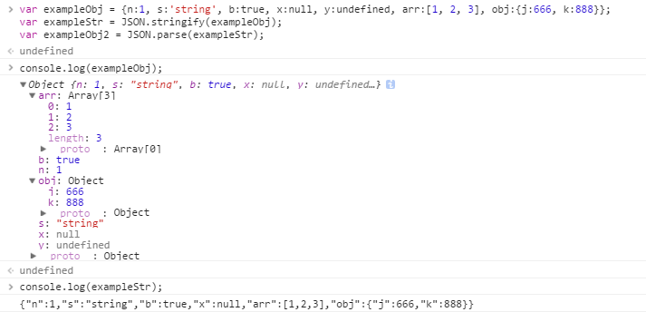
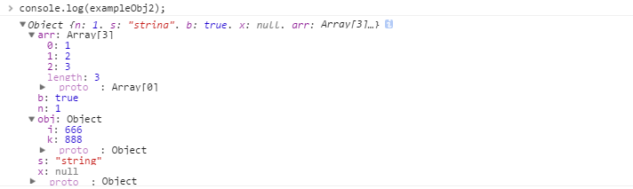

什么是序列化
序列化(Serialization)是将对象的状态信息转换为可以存储或传输的形式的过程,通俗点讲就是将对象转为字符串的过程,那么同理,反序列化就是字符串转对象了~
为什么会有对象序列化
var obj={a:1, b:2} 当这句语句执行后，对象obj的内容会存储在一块内存中，而obj本身存储的只是这块内存的地址的映射而已。简单的说，对象obj就是我们的程序在电脑通电时在内存中维护的一种东西，如果我们程序停止了或者电脑断电了，对象obj将不复存在。
那么如何把对象obj的内容保存在磁盘上呢（也就是说在没电时继续保留着）？这时就需要把对象obj序列化，也就是说把obj的内容转换成一个字符串的形式，然后再保存在磁盘上。另外，我们又怎么通过HTTP协议把对象obj的内容发送到客户端呢？没错，还是需要先把对象obj序列化，然后客户端根据接收到的字符串再反序列化（也就是将字符串还原为对象）解析出相应的对象。这也正是”百度百科—序列化“中描述的两个作用——存储、传输。
JS中的对象序列化
JSON的全称是”JavaScript Object Notation“——JavaScript对象表示法。ECMAScript 5中提供了内置函数JSON.stringify()和JSON.parse()用来序列化和还原JavaScript对象。它们使用起来也很简单：


可以看到，exampleStr和exampleObj2中并没有 y:undefined 的内容。这说明：JSON的语法是JavaScript语法的子集，它并不能表示JavaScript中的所有值，对于JSON语法不支持的属性，序列化后会将其省略。其详细规则如下：
- 对于JavaScript中的五种原始类型，JSON语法支持数字、字符串、布尔值、null四种，不支持undefined；
- NaN、Infinity和-Infinity序列化的结果是null；
- JSON语法不支持函数；
- 除了RegExp、Error对象，JSON语法支持其他所有对象；
- 日期对象序列化的结果是ISO格式的字符串，但
JSON.parse()依然保留它们字符串形态，并不会将其还原为日期对象； - JSON.stringify()只能序列化对象的可枚举的自有属性；
从上面的例子也可以看到，在符合以上规则的情况下，还可以通过对象序列化和反序列化完成对象的深拷贝。
完整版JSON.stringify()
1.简介
序列化原始值、对象或数组
2.概要
JSON.stringify(o[, filter][, indent])
3.参数
o,要转换成JSON字符串的原始值、对象或数组
filter,可选参数，一个数组或函数
indent,可选参数,一个数值或一个字符串
4.返回
JSON格式的字符串，代表o的值，同时通过了filter的过滤，以及根据indent进行了格式化
5.描述
当对象o自身带有
toJSON()方法时，JSON.stringify()会调用o的toJSON()方法，并使用该方法的返回值而不是该对象本身进行字符串化；如果filter存在且是一个函数，那么该函数的返回值将会作为
JSON.stringify()方法的返回值。并且该函数接收两个参数，第一个参数是一个空字符串，第二个参数就是对象o。这里，大家也可以参考Douglas Crockford为 ES3 环境使用JSON写的json2。看看JSON.stringify和str的实现应该就明白我这里所说的这两个参数的具体含义了；如果filter存在且是一个字符串数组（如果数组中包含数字，数字会自动转化为字符串），那么对象o的某些属性名如果不在这个数组中，则序列化时会将这些属性省略，且返回的字符串中属性的顺序会与该数组中属性的顺序一致；
JSON.stringify()返回的通常是不带任何空格或换行符的字符串。如果想输出可读性更好的字符串，需要指定第三个参数。如果指定的第三个参数是介于1~10之间的值，则JSON.stringify()会在每一“层级”的输出插入换行符和指定个数的空格。如果指定的第三个参数是非空字符串，则JSON.stringify()会插入换行符和该字符串（只取前十个字符）来缩进层级；
完整版JSON.parse()
1.简介
解析JSON格式的字符串
2.概要
JSON.parse(s[, reviver])
3.参数
s,要解析的字符串
reviver,可选参数，用来转换解析值的可选函数
4.返回
一个对象、数组或原始值。该返回值是从s中解析的（还有可能被reviver修改过）；
5.描述
如果指定了reviver函数，该函数会为从s中解析的每一个原始值（不是包含这些原始值的对象或数组）调用一次。调用reviver时带有两个参数，第一个参数是属性名——对象的属性名或转换成字符串的数组序号，第二个参数是对象属性或数组元素的原始值。并且，reviver函数的返回值将作为JSON.parse()的返回值 (和Array.protorype.map()有点像了)；